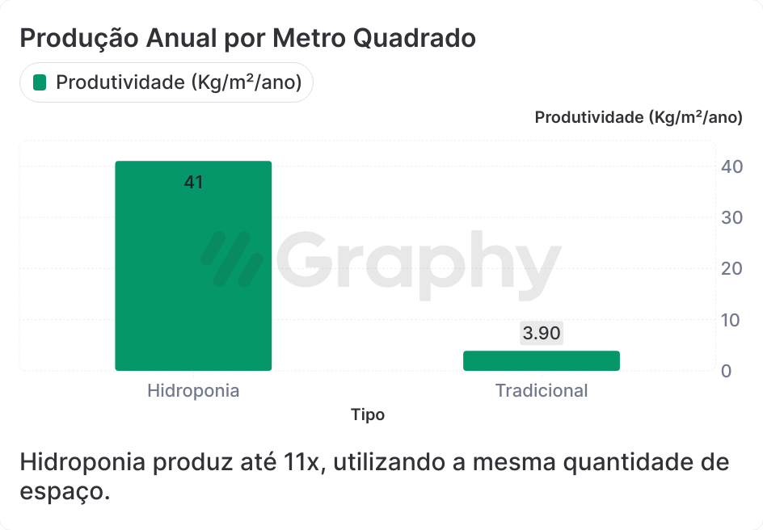

Início
O que é
Beneficios
A HIDROPONIA OFERECE DIVERSOS BENEFÍCIOS, TANTO PARA PRODUTORES QUANTO PARA O MEIO AMBIENTE:
Economia de água:
O sistema utiliza cerca de 90% menos água do que o cultivo tradicional, pois a água é recirculada, reduzindo o desperdício.Maior produtividade:
Com nutrientes diretamente disponíveis e condições controladas, as plantas crescem mais rápido e com maior rendimento, permitindo várias colheitas ao ano.Redução de pragas e doenças:
Como não usa solo, há menor incidência de pragas e doenças típicas do solo, reduzindo a necessidade de pesticidas e garantindo produtos mais limpos.Uso eficiente de espaço:
A hidroponia permite o cultivo vertical, ideal para áreas urbanas e regiões com pouco espaço agrícola, maximizando o uso do ambiente.Controle de qualidade:
A técnica permite monitoramento rigoroso dos nutrientes e condições de cultivo, resultando em alimentos de alta qualidade e com menor impacto ambiental.Menor impacto ambiental:
Com o controle do uso de água e a eliminação do solo, a hidroponia minimiza o impacto sobre ecossistemas, diminuindo a erosão e a contaminação dos recursos naturais.Sazonalidade reduzida:
Em ambientes controlados, a hidroponia permite a produção durante o ano todo, independentemente das estações, garantindo maior estabilidade de abastecimento.
